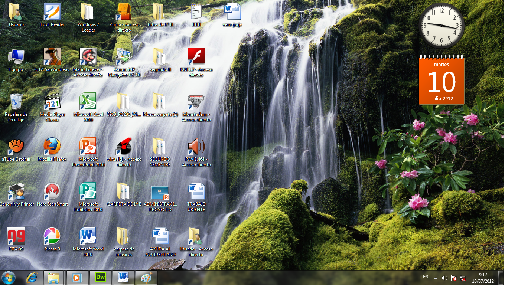
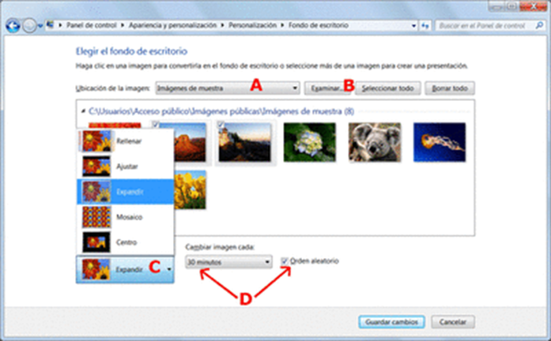

APLICACIONES DE WINDOWS
|
| Página Principal | Siguiente | ||||||||
Fondo del Escritorio |
|||||||||
Un fondo de pantalla, fondo de escritorio o papel tapiz es una imagen que se coloca en el escritorio del entorno gráfico del sistema operativo como decoración. El fondo no está limitado a una imagen estática, existen fondos de escritorio: animados e interactivos, como lo es poner una página web de fondo de escritorio. Algunas opciones que se puede aprender sobre el Fondo del Escritorio son:
|
|||||||||
Dimensiones En general, un fondo de pantalla es una imagen que usualmente tiene el tamaño de la resolución de pantalla. Ejemplos:
|
|||||||||
Cambiar Fondo del Escritorio Para Cambiar el fondo del escritorio debemos seguier los siguientes pasos:
|
 | ||||||||
|
|||||||||